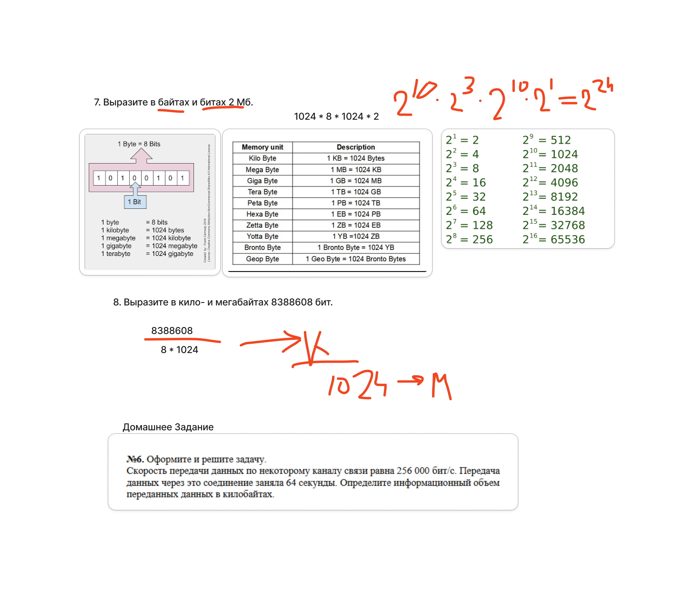

Единицы измерения информации:
| Название | Обозначение | Объём |
|---|---|---|
| Бит | бит |
1 бит |
| Байт | Б |
1 Б = 8 бит |
| Килобайт | КБ |
1 КБ = 1024 Б |
| Мегабайт | МБ |
1 МБ = 1024 КБ |
| Гигабайт | ГБ |
1 ГБ = 1024 МБ |
| Терабайт | ТБ |
1 ТБ = 1024 ГБ |
| Из | В | Умножить на |
|---|---|---|
| Бит → Байт | ÷ 8 | 1 Б = 8 бит |
| Байт → КБ | ÷ 1024 | 1 КБ = 1024 Б |
| КБ → МБ | ÷ 1024 | 1 МБ = 1024 КБ |
| МБ → ГБ | ÷ 1024 | 1 ГБ = 1024 МБ |
Сколько бит в 2 КБ?
Всегда обращай внимание, в каких единицах дано и что просят (Биты? Байт?).
Практика — ключ к успеху!

| Кодировка | Кол-во бит на символ |
|---|---|
| ASCII | 7 или 8 |
| Unicode (UTF-8) | от 8 до 32 |
| KOИ-8, Windows-1251 | 8 |
Задача №6 на доске